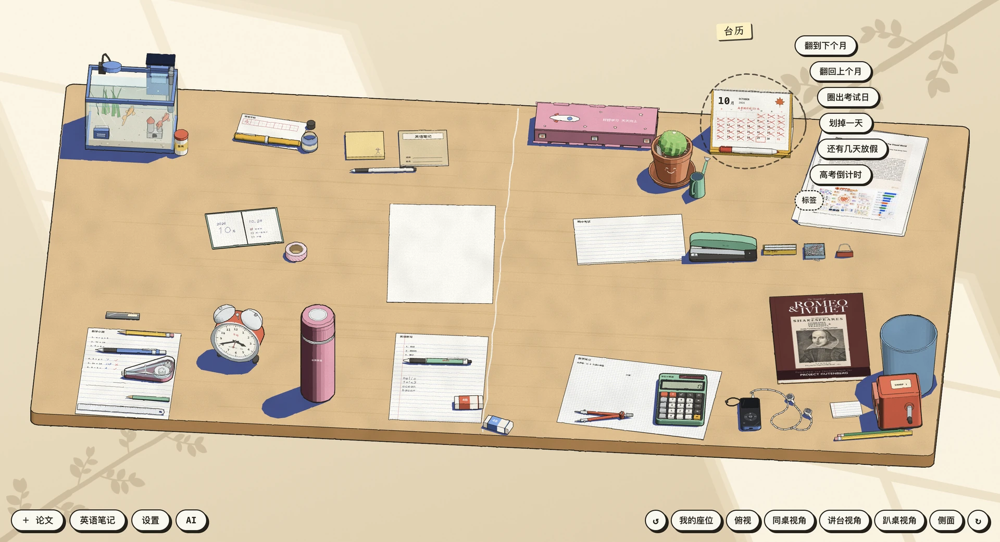

界面与交互演示
点击标签或按键盘 ← / → 切换实机截图，点击大图可全屏查看。

设计特点与本地安全架构
不打断精读心流的交互
摒弃传统 PDF 阅读器加侧边聊天栏的割裂布局，用等轴测手绘书桌、草稿纸逐行流式手写排版和双向引用箭头，把提问、批注和回看原文自然融合在同一视觉空间内。
多后端 AI 统一桥接
基于 TypeScript 与 Node.js 统一封装 Claude Code CLI（每条笔记独立会话）、Codex CLI（支持 HTTPS 回退避免受限网络超时）及任意 OpenAI 兼容流式 API。
本地优先与最小权限沙箱
论文、笔记与词本全部存于本机 data/ 目录。服务默认仅监听 127.0.0.1 并校验 Host/Origin 防跨站；Claude Code 以 --restricted 只读沙箱运行，禁用命令执行并限制访问范围至当前论文目录。
本地运行
需要 Node.js ≥ 22.13，两行命令启动并自动打开 http://127.0.0.1:5199：
git clone https://github.com/DsQi-3721/paperWatcher.git cd paperWatcher npm install npm start